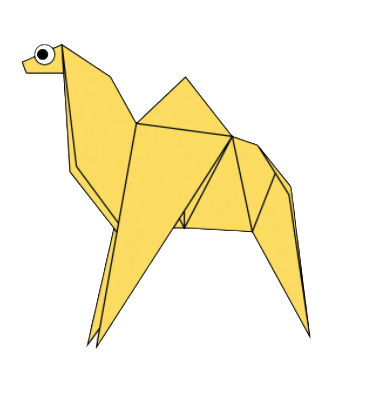

INTERESTING FACTS ABOUT CAMEL
There are two types of camels: One humped or “dromedary” camels and two humped Bactrian camels.
Camels have three sets of eyelids and two rows of eyelashes to keep sand out of their eyes.
Camels have thick lips which let them forage for thorny plants other animals can't eat.

INTERESTING FACTS ABOUT Panda
Giant pandas are good at climbing trees and can also swim.
Pandas have so many fans because they look cute.
A giant panda is much bigger than your teddy bear.

INTERESTING FACTS ABOUT CHAMELEON
Chameleons are reptiles that are part of the iguana suborder.
Almost half of all known species live in Madagascar.
Skin crystals enable them to change color at will.

INTERESTING FACTS ABOUT ORIGAMI
Piegons are highly sociable animals.
Pigeons have excellent hearing abilities.
Pigeons can fly at altitudes up to and beyond 6000 feet.

INTERESTING FACTS ABOUT CICADA
Cicadas can survive a huge fall as babies, or nymphs.
Most have red-orange eyes.
Cicadas don’t sing at night.

INTERESTING FACTS ABOUT Teddy
American multi-billionaire investor Paul Greenwood owned the largest collection of teddy bears.
The first British Teddy Bear Festival was held in 1989 in London.
Animation movie giant Walt Disney produced the first colour cartoon film featuring teddy bears – Alice and the Three Bears – in 1924